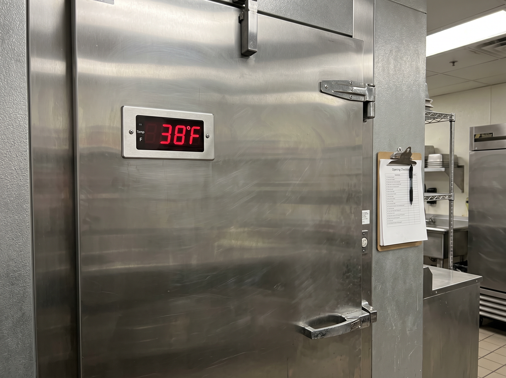
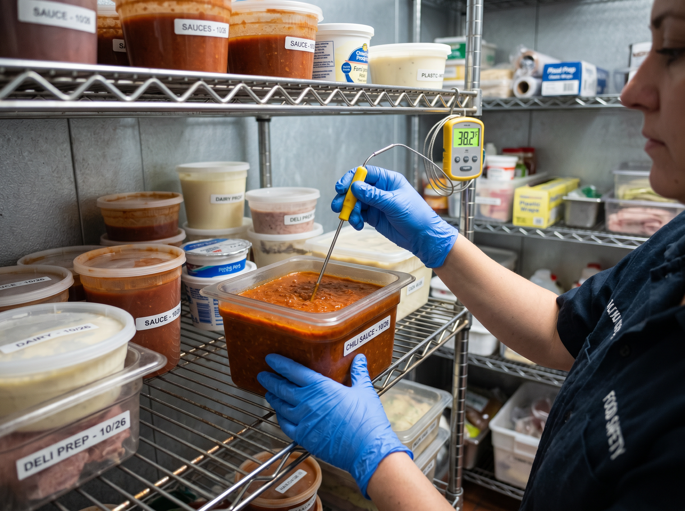
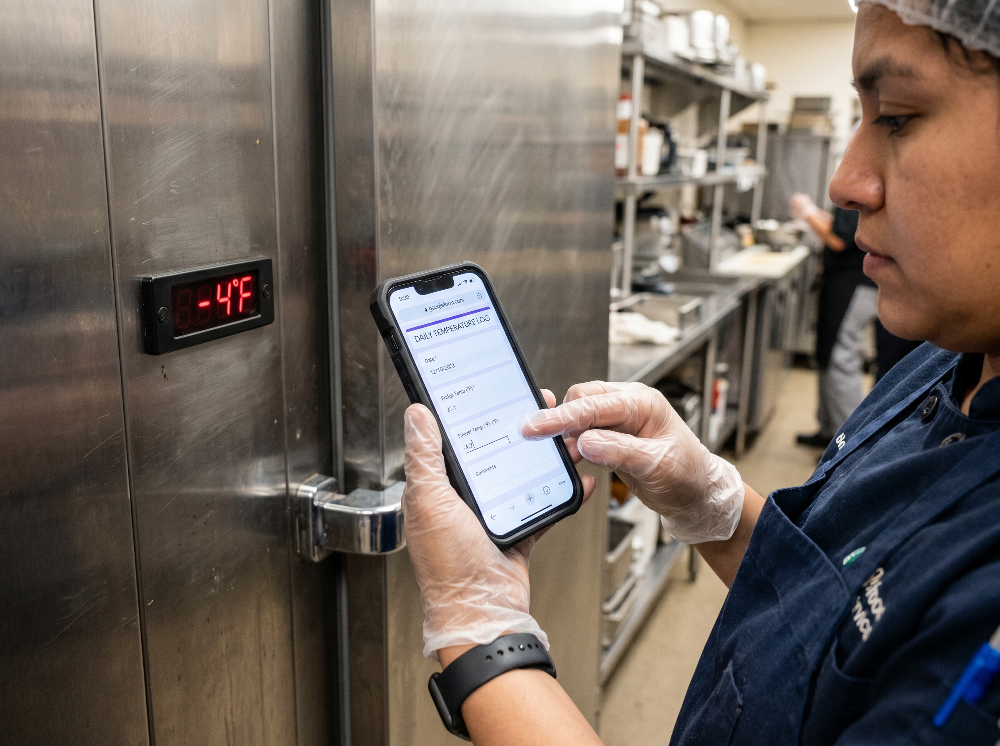

Temperature Logging
Safe temperature zones: Cold food: Hold at 41°F or below · Frozen food: Keep at 0°F or below · Hot food: Hold at 140°F or above · Danger zone: 41°F–140°F. Food must never sit in the danger zone for more than 2 hours.
Step 1
Check fridge temperature first thing on arrival
Before opening any fridge or handling any food, check the fridge temperature display. Reading must show 41°F or below. Log the temperature, your name, and the time on the Opening Checklist immediately. Do not skip this step even if the fridge appears to be running normally.

Note — If the fridge reads above 46°F, do not use the food inside. Alert your manager immediately and do not open the door again until they have assessed.
Step 2
Probe-check a mid-shelf item to verify
The display reading confirms the air temperature — also check an actual food item on the middle shelf using a probe thermometer. Insert the probe into the centre of a dense, covered ready-to-eat item such as a container of sauce, cooked food, or dairy. The centre reading must be at or below 41°F. Wipe and sanitize the probe between readings.

Step 3
Log freezer temperature
Check the freezer temperature display and record it alongside the fridge reading. Freezer must read 0°F or below. If the freezer is warmer than 5°F, there may be a seal issue or compressor problem — do not wait until closing to report this. Log it and notify the manager during opening.

Step 4
Submit the log via the opening checklist form
All temperature readings go into the Opening Checklist form — not written on a slip of paper. The form timestamps and stores every submission in the manager's log sheet automatically. If you miss the form, the reading doesn't officially exist. Submit before service starts, not at the end of your shift.
Note — The form is linked from the Opening Checklist page — bookmark it on the kitchen tablet.
Step 5
Follow the cooling and corrective action procedures when readings fail
If any temperature reading is outside the safe range, you must act immediately — do not wait until the end of your shift. For equipment failures or food out of temperature, see the Corrective Action SOP for the full decision process. For food that needs to be cooled after cooking, see the Cooling & Reheating SOP — cooling records have their own section in the daily temperature log.
Log all readings — including failed ones and the corrective action taken — on the Daily Temperature Log. Temperature logs must be retained for a minimum of 3 months and are routinely checked by Environmental Health Officers during inspections.
Note — A completed temperature log is due diligence evidence. If your fridge fails during the night and you have no record of the previous day's correct temperatures, you cannot demonstrate the food was safe before the failure. Log every day, without exception.